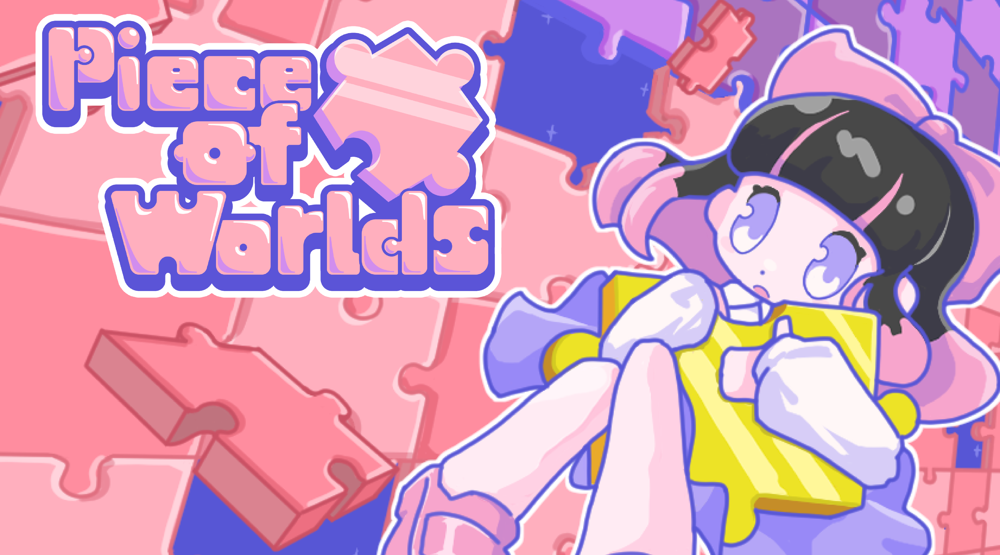
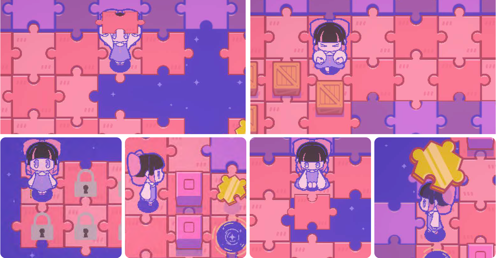
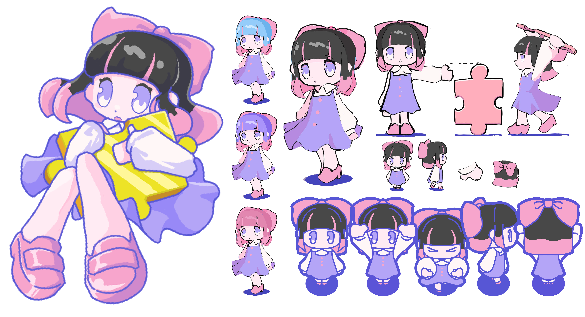
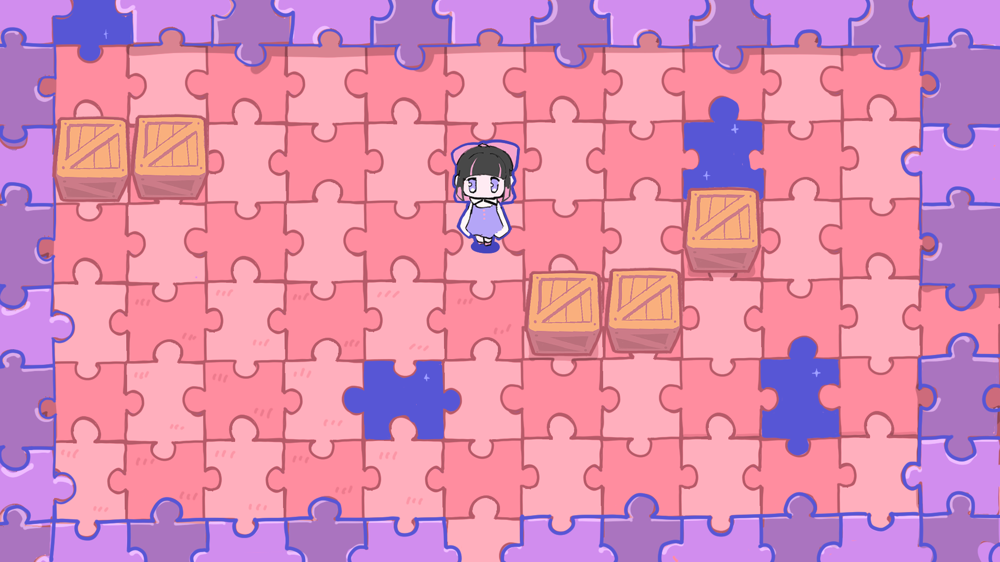
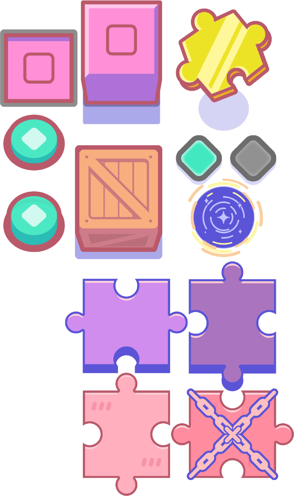
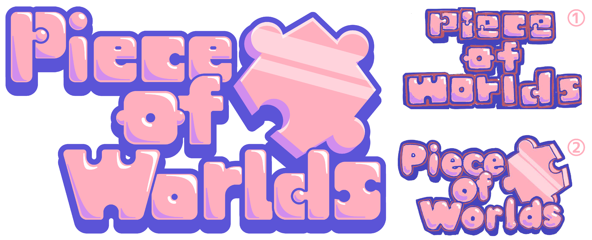

コンセプト
ピースをつけて外して先へ進む
倉庫番パズルゲーム

デザイン
無彩色で目立たせる

不思議で可愛い感じをベースにモチーフに寄りすぎないデザインで進めました。カラーに関して、全体のデザインを考えた時に、髪色がグレーの方がかえって目立つと考え、このデザインに決定しました。

ステージのデザインは、パズルでできた不思議な世界なのでファンシー×不思議をコンセプトに、黒や白の使用を極力避けながら世界を組み立てました。


ラフは2パターン作成しました。①はパズルらさを前面的に押し出し、②は可読性やゲームロゴらしさに振り切ったものを提案し、最終的に二つの良いとこどりのようなロゴに決定しました。